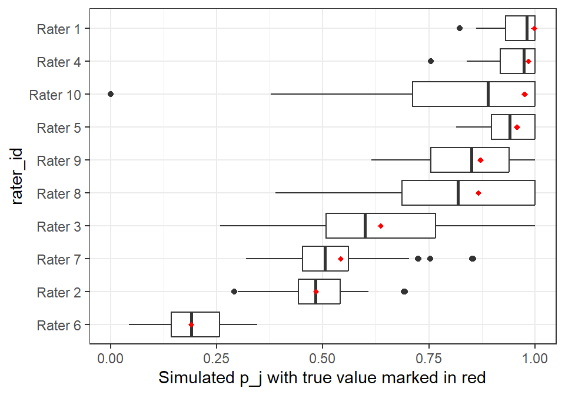

This chapter discusses general ideas about avoiding errors in analysis and then moves on to specific tools for inter-rater statistics. My general remarks are opinionated, and should be taken as a point of view, not a definitive way to think about analysis. Seek other opinions. You can skip the introduction if you want to get straight to the methods. You’ll see that we have much more analytical ability if the rater data has rater IDs. The PTSD data set is used to illustrate methods to assess model fit and error estimation.
1.1 Introduction
There are a lot of ways that data analysis can lead us to the wrong conclusion. In analysis I did of a private college’s graduation rates, I discovered that students who got no financial aid from the college were much more likely to drop out. I confidently wrote a proposal showing that increasing financial aid awards judiciously would pay for itself and lead to higher graduation rates, so everyone wins. The enrollment VP interrupted my enthusiastic presentation to tell me that when a students leave, the financial aid office zeros the aid amount in the database after the fact. The reverse causality obviously invalidated my findings. The point of this story is that we should think about the validity of results more broadly than just the statistics we obtain from the data. For a practical treatment of this attitude, see The Scout Mindset by Julia Galef.
Much of the statistics taught in 101 classes concerns hypothesis testing, with \(p\)-values and so on, that address problems like
\[
Pr(\text{our data}|\text{bad inputs}),
\]
by which I mean the probability that we are seeing this data set because something went wrong with measurement or data preparation, etc. In this case, the statistical properties of the data are irrelevant. When I was young I made the mistake of browsing my uncle’s medical reference books and discovered that I had symptoms for a number of dreaded diseases. If confusion is a reliable symptom of a stroke, then Pr(confusion|stroke) is fairly high, but for a healthy 14-year-old Pr(stroke|confusion) fortunately is not! If we estimate Pr(stroke|confusion), we should have an idea about Pr(stroke) before we get too excited. Since we probably can’t estimate Pr(bad inputs) in the expression called out above, this isn’t a statistical question as much as a mindset and a judgment call. As a precautionary meausure, we can entertain the possibility that our rating data is merely coin-flips (i.e. “had a stroke”) and compute how likely our data set is under those circumstances. This is equivalent to a zero-accuracy t-a-p model
\[
Pr(\text{ratings data}|t= 1/2, a = 0, p = 1/2).
\] This computation gives a lower threshold for accuracy, which I called the Dunning-Kruger horizon. If the estimated t-a-p parameters from the data are safely above this, we can conclude that the chance our data “had a stroke” and is equivalent to coin flips is low. There still might be data integrity issues, but they are not catastrophic. Another kind of analysis is more direct, asking
\[
Pr(\text{erroneous conclusion}|\text{data and analysis}).
\] Such questions can be cast within the set of statistical assumptions we work with to estimate model parameters, like independence of samples and the shape of the probability distribution (a binomial mixture in the case of binary ratings). If we estimate average rater accuracy \(a = .3\), we can then ask for a reasonable range of nearby values that might be true given the natural variability of the data. In Bayesian statistics these are called “credible Intervals” to contrast them with “confidence intervals.” We might find that while the average is \(a=.3\), there’s a good chance that \(a<.2\), which is important to know when conveying results.
The surveying profession has a long tradition of classifying errors into types. One description gives the categories of error as personal, instrumental, and natural. I’ll quote from that source in the sections below.
1.1.1 Personal Error
Error may also arise due to want of perfection of human sight in observing and of touch in manipulating instruments. For example, an error may be there in taking the level reading or reading and angle on the circle of a theodolite. Such errors are known as personal errors.
Gathering and preparing data for analysis is fraught with potential for mistakes. We might get columns mixed up, treat blanks incorrectly, use an outdated version of a file, misinterpret a definition, have a bug in our code, and so on. It’s common to get data with column headers that don’t mean what they seem to mean, or have exceptions. Like a column for grade point averages that has zeros instead of blanks for missing data. A famous example of an analysis that went wrong is the Excel spreadsheet error in an influential economics article, where a blunder led to bad conclusions.
In addition to outright blunders, we can get the wrong answer because we want to. We often prefer one answer over another when we do an analysis. It’s nice to get a clear result that will give us that glow of understanding the world and maybe a pay raise. It’s less fun to find that the analysis isn’t useful and we wasted our time. So we might overlook an inquiry that could cast doubt on a “good” result, but pursue it vigorously for a “bad” one. This is a subtle version of [wireheading](https://en.wikipedia.org/wiki/Wirehead_(science_fiction), taking a shortcut to rewards. Galef’s book, mentioned earlier, is one of a genre of books addressing such cognitive biases. Also see Think Again by Adam Grant, Predictably Irrational by Dan Ariely, and Thinking fast and slow by Daniel Kahneman.
Even if we avoid the reward shortcuts and other biases in our own work, we still have to deal with biases in the people who will use our results. Benn Stancil has a useful observation about this on his substack
Some decisions are made relatively slowly, with intention, and based on reasoned analysis. But most decisions are made quickly and instinctively, based on heuristics, experience, and some rough estimation of how the company works.
He argues that analysts mostly produce technical work and stop there, when we should be trying to affect the heuristics of decision-making. To be more effective, analysts should try to update the mental maps of how things work. As an example, in private colleges the “discount rate” is the fraction of tuition that waived upon entry, and it hovers around 50% these days. Over the last decades increasing discount rates are seen as fiscally irresponsible, and the subject of much board angst. However, it’s easy to show that discount rates must increase as a consequence of the business model. There’s a persistant gap here between how things work and the perception of how things work, which causes bad decisions to be made. It’s purely cultural, a baked-in bias about the world that so prevelant that it’s self-perpetuating. That’s the kind of thing that analysts are up against, and it’s ubiquitous.
It can be uncomfortable to make the leap from a statistical estimate to a mental map, because it’s no longer deterministic. But in fact, our statistical analysis isn’t deterministic either; we make lots of subjective choices in the process. We’re going to advertise the limitations of the study as the lawyerly fine print. Use that license to venture beyond the statistics into meaning. Darwin (and his advocates) established evolution without knowing what mechanism caused it (genetic heritability).
My recommendation is to approach the personal error problem with these strategies. First, we must protect our work from blunders as much as possible. Fully document work as you do it by using quarto documents) or something similar to combine code and text in a transparent and reproducible form. Take pride in the presentation of the work, even if it’s just for yourself, because that attention to detail carries over to the analysis itself. Write the report for yourself in five years. I like to include an appendix with a description of the analytical method and related statistics, like how to intepret logistic regression coefficients. When coding, I like R’s package documentation for writing functions, and use it even when I’m not writing a package, because the declaration of parameters and results at the top of the function definition forces me to think through what I’m doing before I write the code. Write unit tests when it’s likely to prevent bad things. In addition to the analytical report, create an audit report that summarizes the data in various ways, so you can quickly see if something’s amiss.
All of this seems like extra work compared to the way I used to do things. I’d start in Excel or SPSS and compute like mad, looking for some morsel of interestingness, pasting graphs and tables into a Word document occasionally. If I found something that looked useful, I had no way to reproduce what I’d done, and no way to know if there was a mistake in that long chain of reasoning. The discipline of writing good reports and creating a data audit will greatly improve your understanding of the data and the kind of analysis you’re using. A nice report makes it natural to share with domain experts to assess the reasonableness of the findings. The experts will make good suggestions, find problems you aren’t aware of, and you may get them interested in your project. That’s a good way to learn about their mental maps and look for ways to improve them.
1.1.2 Instrumental Error
Surveying error may arise due to imperfection or faulty adjustment of the instrument with which measurement is being taken. For example, a tape may be too long or an angle measuring instrument may be out of adjustment. Such errors are known as instrumental errors.
This describes a difference between the real world and our measurements of it, a misrepresentation of the state of the universe that may bias the results or lead to dubious conclusions. The article on the spreadsheet error cited earlier is entitled “That Reinhart and Rogoff Committed a Spreadsheet Error Completely Misses the Point,” arguing that the technical blunder was irrelevant because of the instrumental error, e.g.
The idea that GDP and debt statistics from mid-19th century Spain should be an empirical basis for modern economic policy – with an accuracy as fine-tuned as two percent of GDP - is ludicrous on its face.
There seems to be a cognitive bias to accept without question substitutes that are available as proxies for the thing we actually want to understand. I’ll call that the representation trap. For example, the authors of Academically Adrift accepted the results of a test[^ Collegiate Learning Assessment, or CLA.] on “critical thinking” as a basis for their claims that students weren’t learning much in college. Even a casual look at that test shows that it has no overlap with most college majors (biology, English, engineering, etc.). So the test doesn’t primarily measure what students learn in college. Moreover, the authors ignore the strong correlation between the “critical thinking” test and intelligence tests. If the psychologists are correct that IQ is relatively fixed, then we wouldn’t expect much change in it. This is not to claim that their conclusions are wrong, just that their method doesn’t offer much support for their conclusions[^ The reception by the press showed there wasn’t much critical thinking going on among those presumably college-educated reporters, so maybe they proved their point after all.], probably because of this “substitution bias.” This problem seems to be ubiquitous in higher education.
Some amount of instrumental error is probably inevitable. We don’t have a perfect representation of the universe, and the further we get from physical dimensions, the worse that representation is. We can measure how much a person weights with very little instrumentation error, but if we want to measure how happy they are, it’s different. If we fall into the substitution trap, we just ask them how happy they are on a scale of one to ten. It’s fine to use that data, but we shouldn’t treat it as if it perfectly represents the glow of happiness we associate with the word [^ See Dan Gilbert and others for actual research on happiness.]. The first step would be to see if the measure is reliable, e.g. by using inter-rater statistics. If the measures can be shown to be non-random, then there are techniques developed by the educational testing experts (Brennan et al., 2006) to see if we can figure how how this measure relates to others. Does the happiness measure correlate with lifespan or income? That aligns with expectations. Does it correlate with drug use? Asking such questions can create a web inter-relationships that clarify meaning. It’s easy to forget that this is how the natural sciences converged to reliable measures and theories. I recommend reading that history. Maybe start with Steven Shapin’s Scientific Revolution.
1.1.3 Natural Error
Error in surveying may also be due to variations in natural phenomena such as temperature, humidity, gravity, wind, refraction and magnetic declination. If they are not properly observed while taking measurements, the results will be incorrect. For example, a tape may be 20 meters at 200C but its length will change if the field temperature is different.
Besides blunders and biases, the representation trap, and reliability and validity concerns, there’s the practical nature of modeling. Our goal is to reduce the complexity of the data to a meaningful, usually parsimoneous, description. That reduction is a kind of data compression, and it entails compromise. As such, it’s akin to story-telling, where we don’t include every detail, don’t show every photo of our trip, and maybe adjust the truth slightly in service of the dramatic arc.
An analog of natural errors in surveying is estimation or residual error in regression models. Once our model has squeezed all the pattern out of the data, the random-looking bits that are left are the natural error. The error can have some pattern left in it, which means our model can be improved, or the error may be “random,” usually meaning normally distributed with mean zero. For the remainder of the discussion, I’ll use the more familiar term “residual error.” The analysis of residuals is comfortably within the domain of statistics. One danger is that we oversell the apparent precision of statistical measures of fit and forget about the other types of error discussed earlier. This is particularly true when we communicate results to non-statisticians, who may over-value the math, mistaking arcane-seeming formulations for truth.
Usually we want to minimize residual error by finding the right model. But this is a trade-off between describing the exact data set we have and describing the imagined source of the data. This is commonly called the bias-variance tradeoff, and leads to regularization, balancing local explanations with global ones, e.g. with a hierarchical Bayesian model (McElreath, 2020).
In our work, natural error is often sampling error, the left-over part after we try to explain the finite ratings with our fitted model (residuals). Whereas instrumental error is a representation problem between the data and the model we map it to, the natural error is the part of the data that can’t be accounted for even with a perfectly good model. These are related. For example, if we predict college outcomes like graduation using student GPAs (cumulative grade averages), we need to use a polynomial expression for GPA, because the relationship isn’t linear (e.g. using a logistic model). If we naively use a simple linear expression for GPA, the predictions (fitted values from the regression) will be biased for high-GPA students, and the “natural errors,” or residuals will have a distinct shape to them. In fact, that’s one way to tell that the model needs to be adjusted. The point is that natural error and instrumental error are considered together as part of the statistical analysis, whereas personal error is entirely different.
For t-a-p models, \(1-a = \bar{a}\) is the chance of random assignment, which can be considered a measure of natural error.
One reason to do validity checking, including assessing model fit, is to avoid conclusions that are misleading, maybe even the opposite of the truth. See Gelman & Carlin (2014) for a discussion of “type-S” and “type-M” errors. The nature of statistics is that we don’t know anything for certain, so we often try to quantify the chance of a wrong conclusion given our data and model, or Pr(bad conclusion|data, model). The idea is to “do no harm” by avoiding conclusions that leave our understanding worse off than before.
1.2 A Validation Process for Binary Ratings
The following steps may help you think through the analysis of binary t-a-p models and reduce Pr(bad conclusion).
Check Assumptions. Validity testing begins with assumptions about the data-gathering process, so it’s essential to seek expertise with the data type to avoid personal errors. If you didn’t generate the data, talk to whoever did. Ask questions that will build confidence that the encodings are valid, the data format reflects your understanding, and the statistical assumptions. In the formal t-a-p model, the most important assumption to check is the independence of raters. If a group of faculty who are scoring student writing portfolios are sitting around a table discussing the essays, the ratings are not independent. Optionally, use prior experience or literature to write down your expectations for \(t\) and \(a\). This is so that your ‘surprise factor’ doesn’t get biased by seeing the results first.
Compute the three-parameter t-a-p solution with params = fit_counts(as_counts(ratings)) and inspect for reasonableness (given your priors) and degeneracy (any coefficient of zero or one).
Compute the Dunning-Kruger horizon for your data configuration using the number of subjects as \(N_s\) and average raters per subject as \(N_r\). This gives a value for accuracy, below which any estimate is suspect. Suppose the DK number comes back as .3, using a 98% threshold, and the accuracy estimate for your data is .25. We should double-check the validity of the data to make sure it’s not being scrambled inadvertantly.
2.1 If the estimated accuracy is below the DK horizon, fit the model using the MCMC method and inspect the distribution of posterior samples for accuracy. Look for a reasonable range of values that represents uncertainty. If this includes values that are unacceptable, then you may not be able to proceed further. It’s an indication that you need more samples or more reliable ratings or more raters, in some combination. You can simulate these combinations as a kind of power test.
Use the t-a-p parameters to estimate the \(t_u\) truth probabilities and rater \(a_j\) and \(p_j\) parameters using rating_params = fit_ratings(ratings) and compare the model fit for this hierarchical model to the three-parameter version using model_fit_comparison(rating_params)$plot. This uses the estimated parameters to simulate new ratings to see if the original data set looks like the simulated ones, an indication that the model represents the data. We’re looking for two things here. One is whether the hierarchical model has better fit (fewer bits/rating) than the average model. If not, we should probably stick with the three-parameter model to avoid overfitting. The second thing to inspect is the relationship to the simulated likelihood (bits/rating) and the dashed line indicating the likelihood for the actual data set. Ideally this line will fall well within the bell shape of the simulation distribution. That indicates that the original data is not unusual with respect to the data sets generated by those parameters.
Use the rating_params, which have all the hierarchical coefficients, to generate new sample ratings and then see if the solver can properly estimate those coefficients. You can generate boxplots for accuracy with estimate_rater_parameter_error(rating_params)$plot_a. This gives us an idea of how much the sampling error combined with estimation error affect the estimates.
Optionally use Bayesian models to further refine parameters and their likely distributions. The shinystan package has interactive tools for detailed analysis.
This process isn’t intended to produce a single statistic that tells us if the model is “good” or not. Rather, it’s intended to be a work flow that allows an analyst to develop an intuition about the data and models to aid in judgments about applications of the ratings. At all points, it’s necessary to apply judgment to test the results for reasonableness with respect to the subjects, raters, and rating processes that produced the data.
1.3 Example: Uniform Raters
As a simple illustration of model assessment, I’ll start with a simulated data set where all the raters and subjects have the same average parameters, subject only to sampling error. The data set is generated with 600 subjects and 10 raters each (the same as the ptsd data, which we’ll consider next), with \(t = .5\), \(a = .7\), and \(p = .2\). The raters are significantly biased away from Class 1. One purpose of this example is to inspire some confidence in the method, since we already know the parameter values. Another purpose is to show how we can investigate a parameter set by simulating values from it to make sure we can recover them. This can be done, for example, after estimating parameters from a real rating set.
1.3.1 Step 1: Are estimated parameters reasonable?
Here, we know the real values of the parameters, so our expectations are exact. We can compute the three-parameter model with the functions provided in the tapModel package.
Show the code
set.seed(1234)ratings <- tapModel::generate_sample_ratings(N_s =200, N_r =10,params =list(t = .5, a = .65, p = .8),details =TRUE)params <- tapModel::fit_counts(as_counts(ratings))params |>select(t, a, p) |>kable(digits =2)
Table 1: Model fit for 20 uniform raters on 200 subjects, showing the fitted parameters for the average t-a-p model with simulated ratings where t = .5, a = .65, and p = .8.
t
a
p
0.51
0.66
0.8
The parameters don’t look degenerate (close to zero or one).
1.3.2 Step 2. Where is the DK Horizon?
The next step is to find the Dunning-Kruger threshold for this data configuration. Recall that this is a reframing of the null hypothesis \(p\)-value to emphasize ignorance.
Figure 1: Ranges of accuracy estimates for nominal t = p = .5 samples.
The boxplots in Figure 1 show that the DK-horizon is low, maybe around \(a=.15\) as the point past which we can’t trust accuracy estimates. If we want, we can put numbers to this by simulating \(a=0\) to see how large the accuracy estimates can be from sampling error.
Table 2: Estimated percentiles for accuracy, given 600 subjects with ten raters each, when accuracy is actually zero.
Threshold
Accuracy
50%
0.00
75%
0.08
90%
0.11
95%
0.13
98%
0.15
For a data set of this size, 98% of the randomly generated ratings resulted in an accuracy parameter estimate of .15 or less. It’s reasonable to be suspicious of parameter estimates that have \(a\) below that threshold. We might be being fooled by sampling and estimation error into thinking the raters are much more accurate than they actually are. In this case, with an estimate of about .65 (the true value), we easily pass the DK-threshold test.
1.3.3 Step 3. Do we need a hierarchical model?
Next we assess the likelihood in units of bits/rating to compare the three-parameter model to the more detailed hierarchical model.
Figure 2: Model fit for uniform raters, showing the simulated distribution of bits per rating for the average and hierarchical t-a-p models with simulated ratings where t = .5, a = .7, and p = .2. The vertical lines shows the bits per rating for each model with the original data set, and the densities are for data sets simulated from the respective parameters.
The model fit in Figure 2 shows overlapping distributions of log likelihoods for the hierarchical and average (three-parameter) t-a-p models. Recall that better fit for a model means a smaller value of bits/rating (hence larger likelihood). Here there’s no difference between the two models, so we can conclude that the hierarchical model is adding parameters with no benefit. In this case, we would choose the average three-parameter t-a-p model as the most parsimonious description of the data. Because this is simulated data, we know that’s the correct conclusion.
1.3.4 Summary
For this example, we already knew the paramete specification, and the goodness-of-fit process confirmed that the estimate was probably trustable. Moreover, it confirmed that there’s no advantage to choosing a more complicated hierarchical model.
I chose the sample size and t-a-p parameters for this example because they also correspond to the PTSD data’s specifications. We’ll now turn to that real data set.
1.4 Example: PTSD Data
The PTSD data set has unknown true parameter values. This is not my research data, so I don’t have intuition about what reasonable answers might look like.
1.4.1 Step 1. Estimate t-a-p parameters
The first step is to estimate the average t-a-p parameters and compare to the DK-threshold, which we already calculated for the uniform raters in Table 2.
We already calculated the DK-horizon (step 2) in the previous example. The accuracy estimate of \(a=.65\) is signficantly higher than the DK-threshold of .15 that we saw in Table 2.
1.4.2 Step 3. Do we need a hierarchical model?
If we include parameters for subjects and raters, does model fit improve?
Unlike the case in Figure 2, the model fit for the PTSD data set in Figure 3 shows that the hierarchical rater model is a much better fit than the average model. The bits per rating for the individual model is .46, while the average model is .57. Raters probably vary in their accuracy and bias since they are classifying complex evidence. If we had the original data we could examine in detail the classifications made by the raters with lowest and highest accuracy, for example by getting more ratings from a few experts. This kind of information could be useful in improving classifications generally.
In both distributions in Figure 3, the dashed line showing the bits/rating for the actual data is somewhat to the left of the mean of the distribution of the bits/rating from the simulated ratings. The parameters are generated from the given data, so we’d expect that the original data set would be a somewhat better fit for the model than data that’s randomly generated from the parameters. That’s the case here, but this “overfitting” subjectively doesn’t look too bad. It would be different if the dashed blue line were way off to the left of the distribution. That would indicate a degree of overfitting (or other problem) that we should follow up on.
Show the code
data(ptsd)raw_ratings <- ptsd# get the ratings for question 2formatted_ratings <- tapModel::format_raw_ratings(raw_ratings,rating_cols =str_c("Rater ",1:10),rating_colnames_type ="rater",subject_id_col ="SubjectID",rater_id_col =NULL,prune =FALSE) ratings <- formatted_ratings |>filter(Question =="Q2") |>select(-Question) |> tapModel::as_binary_ratings(in_class ="2")# compute the rating parameters, t_i, a_j, p_jrating_params <- tapModel::fit_ratings(ratings)# extract the rater parametersrating_params |>group_by(rater_id) |>summarize(c_j =mean(rating),a_j =first(a),p_j =first(p),bias =mean(p - t)) |>arrange(a_j) |>kable(digits =2)
Table 4: Rater parameters, showing the ID of the rater from the original PTSD data with individual rater statistics: c_j is the rate of class 1 assignments; a_j and p_j are the t-a-p model parameters for this rater; and bias is mean(p_j - t_i).
rater_id
c_j
a_j
p_j
bias
Rater 1
0.84
0.36
1.00
0.46
Rater 5
0.80
0.39
0.96
0.42
Rater 4
0.80
0.43
0.99
0.45
Rater 2
0.52
0.65
0.48
-0.05
Rater 9
0.66
0.65
0.87
0.33
Rater 7
0.54
0.75
0.54
0.00
Rater 6
0.46
0.76
0.19
-0.35
Rater 3
0.56
0.79
0.64
0.10
Rater 8
0.59
0.84
0.87
0.33
Rater 10
0.60
0.87
0.98
0.44
1.4.3 Step 4: Can we recover the parameters from simulations?
To test the robustness of the individual model fit, we can simulate new data sets from the hierarchcial parameters and then see how well we can recover the parameters. This is computationally expensive for large data sets, so I’ll only run 50 of these.
The results in Figure 4 show that the individual rater parameters are well recovered from the simulated data sets. The red markers show the proposed accuracy estimates for each rater, and the boxplots show the distribution of recovered values after simulating new ratings and recovering the parameters. We can do the same for the \(p_j\) parameters.
Show the code
error_est$plot_p

Figure 5
The plots in Figure 5 show that the estimates are robust, and that raters 1,4,5, and 10 are quite biased toward assigning Class 1. In practice, this feedback can likely be used to improve ratings.
The PTSD data set is interesting because the same raters used three different methods to assess the PTSD condition for the same subjects. This gives us an opportunity to see how the rater accuracy estimates generalize. We might guess that an inaccurate rater would be inaccurate regardless of the particular measure being used.
Figure 6: Comparison of rater accuracy over three methods of assessing PTSD, where a_j is the estimated rater accuracy for each method, and c_j is the rater’s average Class 1 rate.
The pattern of \(aj\) estimates over the three evaluation types in Figure 6 show that rater accuracy is consistant, for example with rater 1 consistently among the least accurate, and rater 8 among the best. We can also see that method 2 tends to generate the most accurate results over all the raters. Finally, we can attribute part of the inaccuracy for the low-accuracy raters to over-assigning Class 1. Note that method 2 has more discrimination generally, with smaller raters of Class 1 (the green dots in the right panel are closer to .5).
1.4.4 Summary
The above analysis shows what the PTSD ratings have impressive accuracy if the model assumptions are met (primarily independence of raters). A hierarchical model is called for, and it shows that the raters have a range of characteristics that might be useful in improving classifications in real-world settings. In particular, some raters are notably more accurate than others. The third method of scoring seems to inflate Class 1 ratings, reducing accuracy generally. The PTSD data analysis shows that we can extract much more meaningful information from the ratings than is possible with the traditional kappa statistics. Note, however, that we only get the full benefit of these new methods if we have rater identification for each rating.
References
Brennan, R. L., Measurement in Education, N. C. on, et al. (2006). Educational measurement. Praeger Publishers,.
Gelman, A., & Carlin, J. (2014). Beyond power calculations: Assessing type s (sign) and type m (magnitude) errors. Perspectives on Psychological Science, 9(6), 641–651.
McElreath, R. (2020). Statistical rethinking: A bayesian course with examples in r and stan (2nd ed.). Chapman; Hall/CRC.